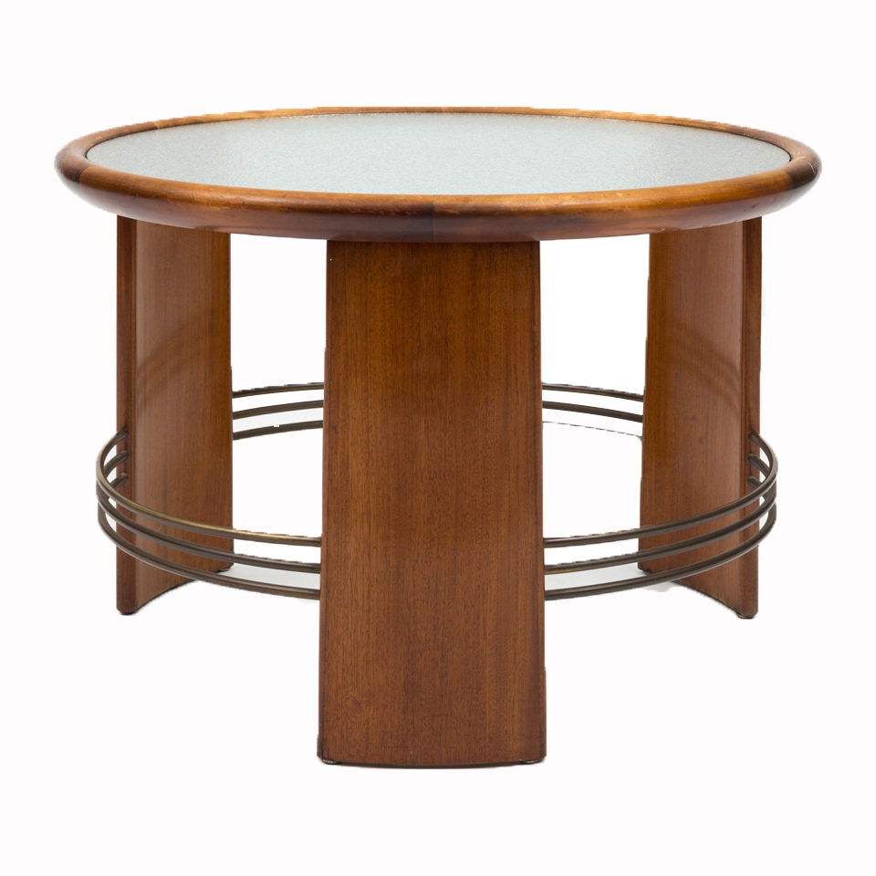

Webshop
Hos IN2 Design sælger vi dansk moderne håndværk. I årevis har vi i Danmark været et førende land inden for klassisk design, og har fået international anerkendelse for vores minimalistiske og tidløse håndværk. Hos IN2 Design kan du købe møbler på tværs af Danmarks mest kendte varemærker inden for møbelbranchen.


- 